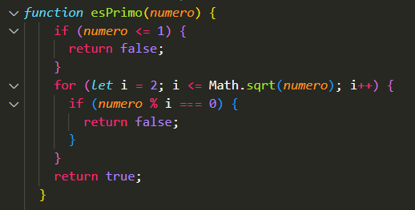

Apliquemoslo a la programacion!
Conteo de números primos
Un numero primo es aquel q es solo divisible entre 0 y 1. En este sentido los numeros primos son unicamente impares, a excepcion del 2.
Ingresa un número para verificar si es primo
Ingresa un número para verificar si es primo